scene-0-door: fridge — EXECUTED
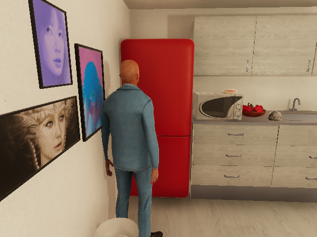
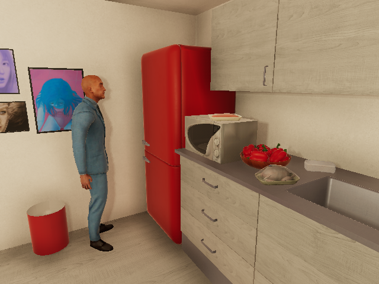
{'0': {'message': 'Success'}}2026-09-06 · actual simulator camera captures · preliminary evidence, not approved training examples


{'0': {'message': 'Success'}}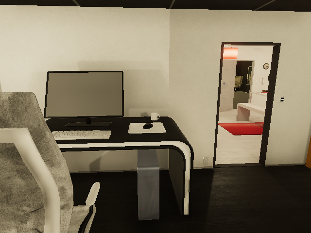
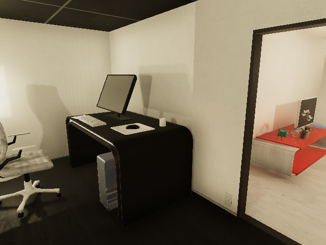
{'0': {'message': 'ScriptExcutor 0: EXECUTION_GENERAL: Script is impossible to execute\n\n'}}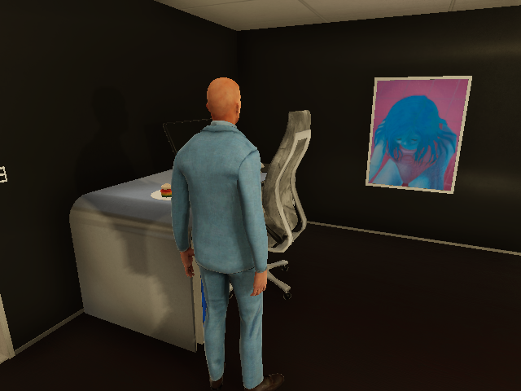
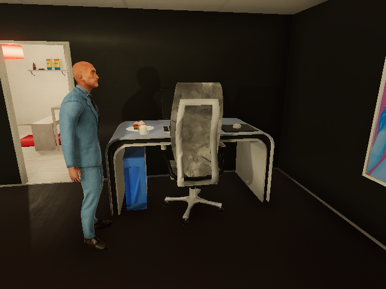
{'0': {'message': 'ScriptExcutor 0: PROCESS WALK: Can not select object: chair. REASON: Unknown\nEXECUTION_GENERAL: Script is impossible to execute\n\n'}}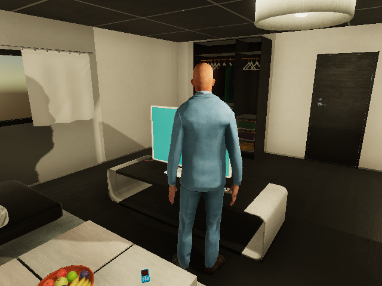
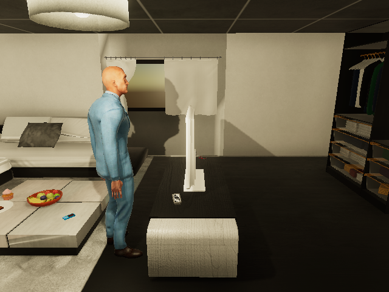
{'0': {'message': 'Success'}}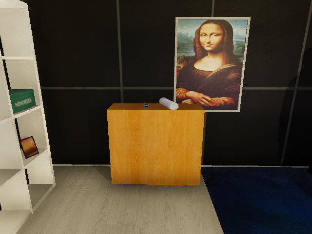
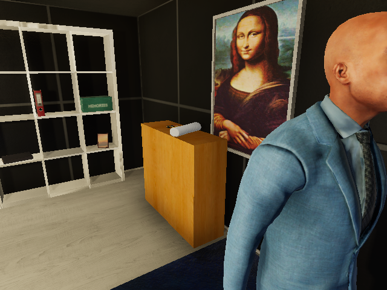
{'0': {'message': 'ScriptExcutor 0: PROCESS WALK: Can not select object: cabinet. REASON: Unknown\nEXECUTION_GENERAL: Script is impossible to execute\n\n'}}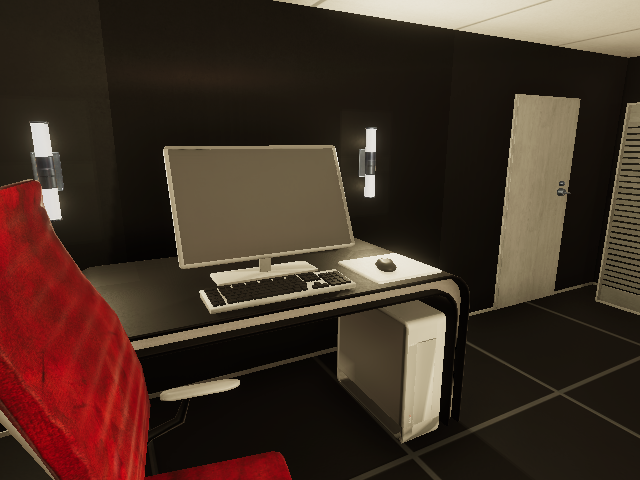
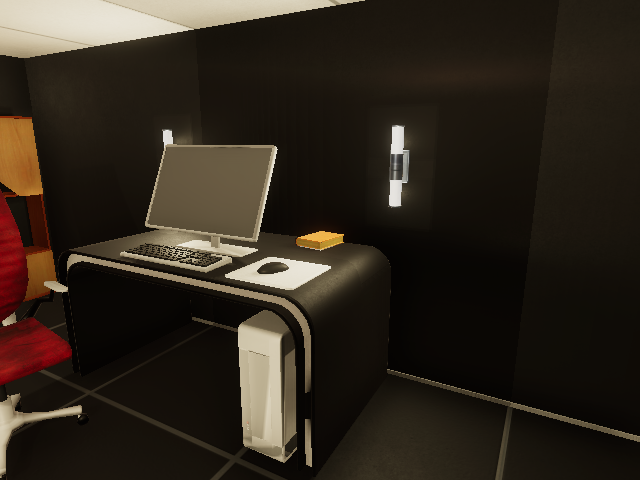
{'0': {'message': 'ScriptExcutor 0: EXECUTION_GENERAL: Script is impossible to execute\n\n'}}UnityCommunicationException("HTTPConnectionPool(host='127.0.0.1', port=18082): Read timed out. (read timeout=180)")